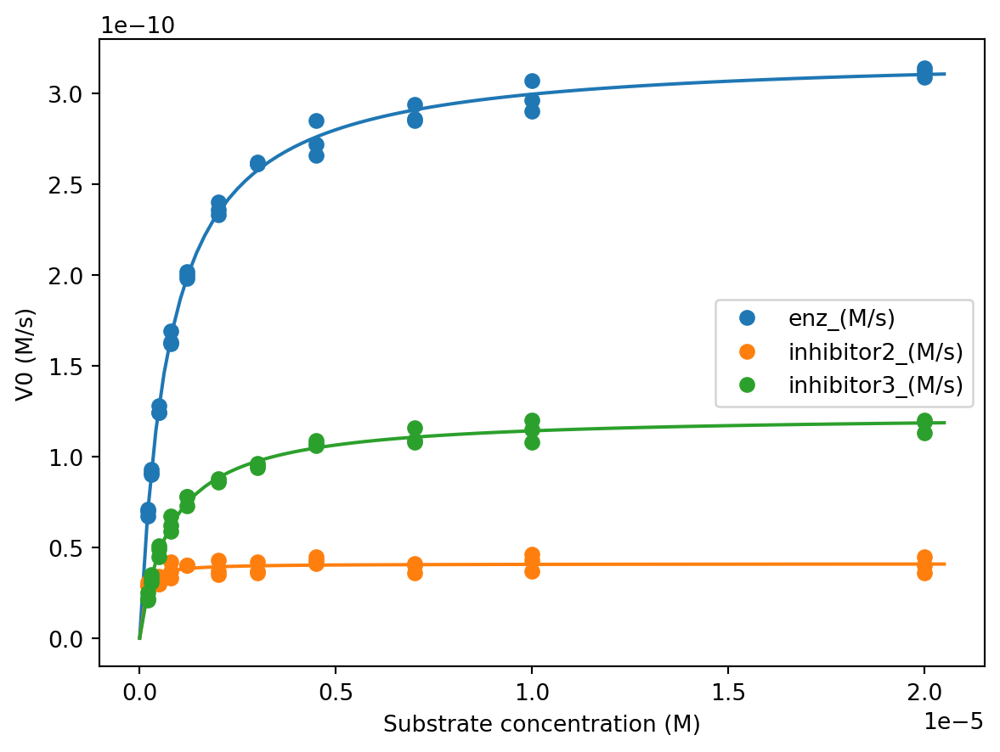

Code
try:
import fysisk_biokemi
print("Already installed")
except ImportError:
%pip install -q "fysisk_biokemi[pyodide] @ https://au-mbg.github.io/fysisk-biokemi/wheels/fysisk_biokemi-0.2.2-py3-none-any.whl"v1.0.0
try:
import fysisk_biokemi
print("Already installed")
except ImportError:
%pip install -q "fysisk_biokemi[pyodide] @ https://au-mbg.github.io/fysisk-biokemi/wheels/fysisk_biokemi-0.2.2-py3-none-any.whl"import matplotlib.pyplot as plt
import pandas as pd
from scipy.optimize import curve_fit
import numpy as np
from IPython.display import display
pd.set_option('display.max_rows', 6)An enzyme obeying the Michaelis-Menten kinetics model was tested for substrate conversion in the absence and presence of an inhibitor, called inhibitor1 at a concentration of \([\textrm{I}] = 2.5 \cdot 10^{-3} \ \textrm{M}\). The data set is contained in the file enzyme-inhib-i.xlsx. Using this data a researcher wanted to determine the type of inhibition.
Start by loading the dataset
data_file_path = ... # Write the path to the dataset file
df = pd.read_excel(data_file_path)
display(df)Convert the concentrations of substrate and the initial velocities to units given in M and \(\mathrm{M}\cdot \mathrm{s}^{-1}\), respectively.
## Your task: Make new columns with the properties in SI units.
df['[S]_(M)'] = ...
df['V0_no_inhib_(M/s)'] = ...
... # This one you'll have to do all on your own.
display(df)Plot the initial velocities of both experiments as a function of substrate concentration in one plot. Estimate \(K_M\) and \(V_\mathrm{max}\) in the presence and absence of inhibitor from the plot.
fig, ax = plt.subplots(figsize=(6, 4))
## Your task: Plot the initial velocities for both experiments.
... # Your code for plotting here
... # and here.
## Sets the x and y-axis labels and shows the legend.
ax.set_xlabel('[S] (M)')
ax.set_ylabel('$V_0$ (M/s)')
ax.legend()Use the plots to estimate \(K_M\) and \(V_\mathrm{max}\) and assign in the cell below
## Your task: Estimate parameters without inhibitor.
K_M_no_inhib_estimate = ...
Vmax_no_inhib_estimate = ...
## Your task: Estimate parameters with inhibitor.
K_M_inhib_estimate = ...
Vmax_inhib_estimate = ...The researcher wanted to determine \(V_\mathrm{max}\) and \(K_M\) values for both experiments in order to correctly conclude on the type of inhibitor.
Determine \(V_\mathrm{max}\) and \(K_M\) by fitting.
Start writing the function to fit with
## Your task: Implement the Michealis-Menten equation as a function
def michaelis_menten(S, Vmax, Km):
result = ...
return resultAnd use the curve_fit-function to find the parameters
## Your task: Make a fit to the Michealies-Menten equation for the data without the inhibitor.
initial_guess = [Vmax_no_inhib_estimate, K_M_no_inhib_estimate]
fitted_parameters, trash = ...
vmax_fit_no_inhib, km_fit_no_inhib = fitted_parameters
## Your task: Make a fit to the Michealies-Menten equation for the data the inhibitor.
initial_guess = [Vmax_inhib_estimate, K_M_inhib_estimate]
fitted_parameters, trash = ...
vmax_fit_inhib, km_fit_inhib = fitted_parameters
## Printing
print('Without inhibitor:')
print(' V_max:', vmax_fit_no_inhib)
print(' K_M:', km_fit_no_inhib)
print('With inhibitor:')
print(' V_max:', vmax_fit_inhib)
print(' K_M:', km_fit_inhib)Which of the kinetic parameters changes substantively in the presence of the inhibitor
As per usual, we need to plot the fit to confirm that that it has been done successfully.
We start by evaluating the fit for each set of parameters - those with and those without the inhibitor.
## Your task: Evaluate the fits for both cases
S_smooth = np.linspace(0.0, 0.055)
V0_no_inhib_model = ...
V0_inhib_model = ...Copy your code from above and then we plot the fit along with the data,
## Your task: Copy your plotting code from above and add the two lines to plot the fits.What type of inhibitor is inhibitor1?
The experiment was done in the presence of 2.5 mM of the inhibitor. What is the \(K_i\) for this inhibitor?
## Your task: Set the inhibitor concentration in M.
I_concentration = ...
## Your task: Calculate K_i from the fitted K_M values
K_i = ...
print(K_i)import matplotlib.pyplot as plt
import pandas as pd
from scipy.optimize import curve_fit
import numpy as np
from IPython.display import display
pd.set_option('display.max_rows', 6)Two enzyme inhibitors were identified as part of a drug discovery program. To characterize the mechanism of action, the reaction kinetics were analysed for the enzyme alone and in the presence of 5 \(\mu\)M of each of the inhibitors as a function of substrate concentration resulting in the data in the file enzyme-inhib-ii.xlsx
Load the dataset
data_file_path = ... # Write the path to the dataset file
df = pd.read_excel(data_file_path)
display(df)Convert the measurements to SI units and plot the initial reaction velocity versus substrate concentration for all three reactions.
Start by converting the units
## Your task: Add new columns with the properties in the correct SI units.
## There are 4 properties, so you should add 4 columns.
... # Your code to convert units here.And then plot to visualize the data
fig, ax = plt.subplots()
## Your task plot each data vs. [S]_(M).
## To distinguish the data its a good idea to use label='enz_(M/s)' and so on.
...
...
...
ax.legend()
ax.set_xlabel('Substrate concentration [M]', fontsize=14)
ax.set_ylabel('$V_0$', fontsize=14)
plt.show()Based on the appearance of these plots:
Based on your answers,
As always, we need the function we’re fitting with
def michaelis_menten(S, Vmax, Km):
return Vmax * S / (S + Km)And then we can make the fit
## Your task fit dataset 1: 'enz_(M/s)'
initial_guess = [..., ...]
fitted_parameters, trash = curve_fit(michaelis_menten, df['[S]_(M)'], df['enz_(M/s)'], initial_guess)
Vmax_enz_fit, K_M_enz_fit = fitted_parameters
## Your task fit dataset 2: 'inhibitor2_(M/s)'
initial_guess = [..., ...]
fitted_parameters, trash = curve_fit(michaelis_menten, df['[S]_(M)'], df['inhibitor2_(M/s)'], initial_guess)
Vmax_inhib2_fit, K_M_inhib2_fit = fitted_parameters
## Your task fit dataset 3: 'inhibitor2_(M/s)'
initial_guess = [..., ...]
fitted_parameters, trash = curve_fit(michaelis_menten, df['[S]_(M)'], df['inhibitor3_(M/s)'], initial_guess)
Vmax_inhib3_fit, K_M_inhib3_fit = fitted_parameters
print('Dataset 1: enz_(M/s)')
print(' V_max', Vmax_enz_fit)
print(' K_M', K_M_enz_fit)
print('Dataset 2: inhibitor2_(M/s)')
print(' V_max', Vmax_inhib2_fit)
print(' K_M', K_M_inhib2_fit)
print('Dataset 3: inhibitor3_(M/s)')
print(' V_max', Vmax_inhib3_fit)
print(' K_M', K_M_inhib3_fit)fig, ax = plt.subplots()
## Your task: Evaluate the fits
S_smooth = np.linspace(0, 2.05*10**(-5), 100)
V0_enz = michaelis_menten(S_smooth, Vmax_enz_fit, K_M_enz_fit)
V0_inhib2 = michaelis_menten(S_smooth, Vmax_inhib2_fit, K_M_inhib2_fit)
V0_inhib3 = michaelis_menten(S_smooth, Vmax_inhib3_fit, K_M_inhib3_fit)
## Plots the fits
ax.plot(S_smooth, V0_enz)
ax.plot(S_smooth, V0_inhib2)
ax.plot(S_smooth, V0_inhib3)
## Plots the data
ax.plot(df['[S]_(M)'], df['enz_(M/s)'], 'o', label='enz_(M/s)', color='C0')
ax.plot(df['[S]_(M)'], df['inhibitor2_(M/s)'], 'o', label='inhibitor2_(M/s)', color='C1')
ax.plot(df['[S]_(M)'], df['inhibitor3_(M/s)'], 'o', label='inhibitor3_(M/s)', color='C2')
## Adds legend and axis labels.
ax.legend()
ax.set_xlabel('Substrate concentration (M)')
ax.set_ylabel('V0 (M/s)')
plt.show()
If your fits don’t closely match the data, go back and change your initial guesses.
We call \(V_\mathrm{max}\) and \(K_\mathrm{M}\) recorded in the presence of the inhibitor for \(V_\mathrm{max}^{app}\) and \(K_\mathrm{M}^{app}\) (\(app = \mathrm{apparent}\)).
Calcuate how much each value changes in the presence of the inhibitor by dividing them by the parameters determined in the absence of an inhibitor.
## Your task: Calculate the ratio nof K_M^app / K_M
K_M_ratio2 = K_M_inhib2_fit / K_M_enz_fit
K_M_ratio3 = K_M_inhib3_fit / K_M_enz_fit
## Your task: Calculate the ratio nof Vmax^app / Vmax
Vmax_ratio2 = Vmax_inhib2_fit / Vmax_enz_fit
Vmax_ratio3 = Vmax_inhib3_fit / Vmax_enz_fit
## Prints the ratios
print('Inhibitor 2')
print('K_M', K_M_ratio2)
print('Vmax', Vmax_ratio2)
print('Inhibitor 3')
print('K_M', K_M_ratio3)
print('Vmax', Vmax_ratio3)Based on the above, what is the likely inhibition type of inhibitor2 and inhibitor3?
Determine the \(K_i\) for each of the two inhibitors. The inhibitor concentration is 5 \(\mu\mathrm{M}\).
## Your task: Assign known value
I = ...
## Your task: Calculate K_I for both cases.
## You should derive the correct expression before doing any coding!
K_I_inhib2 = ...
K_I_inhib3 = ...
## Prints the results
print('Inhibitor 2: ', K_I_inhib2)
print('Inhibitor 3: ', K_I_inhib3)import matplotlib.pyplot as plt
from scipy.optimize import curve_fit
import numpy as np
import pandas as pd
from IPython.display import displayThe enzyme aspartate transcarbamoylase (ATCase) catalyzes the first reaction in the biosynthesis of pyrimidines such as CTP as shown in the reaction below:

ATCase does not obey the Michaelis-Menten kinetics model but instead shows the behaviour recorded in the enzyme-behav-atcase.csv dataset.
The dataset consists of three columns; the aspartate concentration in mM and the rate of formation of N-carbamyolaspartate with and without the presence of CTP.
Load the dataset with pandas. Set data_file_path to the path of the dataset file named above.
data_file_path = ... # Write the path to the dataset file
df = pd.read_csv(data_file_path)
display(df)## Your task: Add columns with the properties in SI units.
df['[aspartate]_(M)'] = ...
df['rate_(M/s)'] = ...
df['rate_ctp_(M/s)'] = ...Make a plot of the rate_(M/s) dataset versus the aspartate concentration.
fig, ax = plt.subplots()
## Your task: Plot the dataset
...
## Adds legend and labels.
ax.set_xlabel('[Aspartate] (M)')
ax.set_ylabel('Rate of formation (M/s)')
ax.legend()Looking at the curve without CTP, describe the kinetic profile of ATCase and explain what it tells us about the way ATCase works. (You may find inspiration in the material previously covered on protein-ligand interactions)
What does the figure tell us about the quaternary structure of ATCase?
Copy your plotting code from above and add a line to also plot the rate_ctp_(M/s) dataset.
## Your task: Copy your plotting code and add a line to also plot the rate_ctp_(M/s) dataset.
...Qualitatively describe the effect of CTP on the rate of N-carbamyolaspartate formation
In fact many enzymes are regulated by certain end products in a fashion similar to the CTP effect on ATCase. Can you explain why this might be a physiological advantage?
There is also a formulation of the Hill equation for the enzyme kinetics, which has the following form: \[ v = \frac{V_\mathrm{max} \cdot S^h}{K_{\frac{1}{2}}^h+S^h} \]
Note, that we use a formulation of the Hill equation, where the constant on the denominator is raised to the power of \(h\). Therefore, the constant also marks the half-way saturation concentration and we denote it \(K_{\frac{1}{2}}\)
As usual start by writing a function implementing this equation
def hill_eq(S, Vmax, K, h):
## Your task: Implement the enzyme kinetics Hill equation.
result = ...
return result
print(hill_eq(1, 1, 1, 1)) # Should give 0.5 -> (1 * 1^1) / (1**1 + 1**1) = (1 * 1) / (1 + 1) = 1/2And then make the fit for each dataset of rates vs. aspartate concentration.
## Your task: Make the fit for the dataset without CTP
fitted_parameters_noctp, trash = ...
Vmax_fit_noctp, K_fit_noctp, h_fit_noctp = fitted_parameters_noctp
## Your task: Make the fit for the dataset with CTP
fitted_parameters_ctp, trash = ...
Vmax_fit_ctp, K_fit_ctp, h_fit_ctp = fitted_parameters_ctpThe next cell prints the fitted parameters for both cases.
print('Without CTP')
print(' Vmax', Vmax_fit_noctp)
print(' K1/2', K_fit_noctp)
print(' h', h_fit_noctp)
print('With CTP')
print(' Vmax', Vmax_fit_ctp)
print(' K1/2', K_fit_ctp)
print(' h', h_fit_ctp)Then we can plot
fig, ax = plt.subplots()
## Your task: Calculate the fits
S_smooth = np.linspace(0, 50*10**(-3))
V_fit_noctp = ...
V_fit_ctp = ...
## Your task: Plot the fits:
...
...
## Plots the datasets
ax.plot(df['[aspartate]_(M)'], df['rate_(M/s)'], 'o', label='No CTP', color='C0')
ax.plot(df['[aspartate]_(M)'], df['rate_ctp_(M/s)'], 'o', label='CTP', color='C1')
## Labels & legend
ax.set_xlabel('[Aspartate] (M)')
ax.set_ylabel('v (M/s)')
ax.legend()